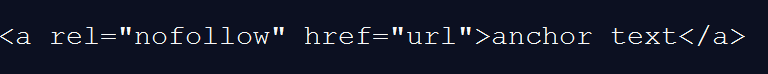

robots.txt
بعضی اوقات یک وبمستر نیاز دارد تا برخی صفحات سایتش ایندکس نشوند و از دید موتورهای جستجو پنهان بمانند، برای این منظور باید فایلrobots.txt را در ریشه سرور قرار دهیم. موتور جستجو قبل از ایندکس کردن سایت یک درخاست به سرور ارسال میکند و تقاضای بازخوانی فایل robots را میکند، پس اگر فایلمان در ریشه سرور نباشد به معنی نامحدود بودن موتور جستجو در Index کردن صفحات سایت است.
Robots Meta Tag
در برخی موارد پیش میآید که شما نیاز دارید به صورت موردی صفحات خود را محدود کنید که در اینصورت نیاز به Robots Meta Tag دارید، بدین صورت از این تگ ها بهره ببرید.
<""=meta name="robots" content>
این تگ را head فایل html و content آن را برابر با مقادیر دلخواه زیر قرار دهید.
- index
- noindex
- follow
- nofollow
- به معنی ایندکس کردن صفحه
- بر خلاف دستور index
- برای فالو کردن تمام لینک های موجود در سند html
- بر خلاف دستور follow
توجه داشته باشید که در صورت عدم وجود هر تگی از جنس Robots بدین معنا است که موتور جستجو هم میتواند صفحه را ایندکس کند و هم لینکهای موجود در صفحه را فالو کند.
nofollow links
وقتی شما در سایت خود ادرس یک سایت دیگر را میگذارید موتور جستجو بخشی از رنک سایت شما را برداشته و به سایت هدف میدهد. برای جلوگیری از این روند مقدار rel را در تگ a برابر با nofollow قرار میدهیم.

علاوه بر تمام گفتههایمان، موارد زیر را نیز بهتر است رعایت کنید.
کدهای JS/CSS را در یک فولدر جدا قرار دهیم، تا حد ممکن از فایل فلش و کدهای JS استفاده نکنیم، محتوا را برای کاربر تولید کنیم نه موتور جستجو چون همان کاربر به منزلهی یک بنر تبلیغاتی محسوب میشود.
در آخر این را به یاد داشته باشید که گوگل از یک الگوریتمی استفاده میکند به نام google sandbox که سایتهای جوان از اهمیت چندانی برخوردار نیستند. مدت زمان این الگوریتم برای هر سایت جوان ۶ ماه پس از ساخت سایت است. ولی شما به کار خود ادامه دهید چه بسا که این زمان، بسته به کار و تلاش شما کاهش یابد.